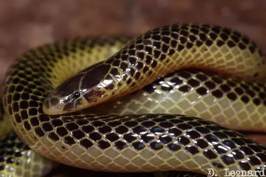

Xenocalamus
The genus Xenocalamus (family Atractaspididae) has 5 living species in SnakeList (all venomous), recorded in 10 countries.
- 5living species
- 5venomous
- 10countries
About the genus
A genus of the family Atractaspididae (burrowing asps, stiletto snakes and relatives).
Species
Showing 5 species
 Elongate Quill-snouted SnakeXenocalamus mechowii
Elongate Quill-snouted SnakeXenocalamus mechowii- No photo yetMichell's Quill-snouted SnakeXenocalamus michelli
- No photo yetSabi Quill-snouted SnakeXenocalamus sabiensis
 Slender Quill-snouted SnakeXenocalamus bicolor
Slender Quill-snouted SnakeXenocalamus bicolor
Transvaal Quillsnout SnakeXenocalamus transvaalensis
No snakes in Xenocalamus match.
About the genus Xenocalamus
- Distribution: living species recorded in 10 countries, on one continent: Africa.
- Family: Atractaspididae.
- Countries and territories: Angola, Botswana, Democratic Republic of the Congo, Malawi, Mozambique, Namibia, Republic of the Congo, South Africa, Zambia, Zimbabwe.
Compare its species
Its living species side by side. Lengths come only from SnakeList’s reviewed, sourced accounts; the others are left blank rather than guessed.
| Species | Venom | Recorded in | Adult length (reviewed accounts) |
|---|---|---|---|
| Elongate Quill-snouted Snake Xenocalamus mechowii | Venomous | 8 countries (Africa) | No reviewed account yet |
| Michell's Quill-snouted Snake Xenocalamus michelli | Venomous | 1 country (Africa) | No reviewed account yet |
| Sabi Quill-snouted Snake Xenocalamus sabiensis | Venomous | 3 countries (Africa) | No reviewed account yet |
| Slender Quill-snouted Snake Xenocalamus bicolor | Venomous | 8 countries (Africa) | No reviewed account yet |
| Transvaal Quillsnout Snake Xenocalamus transvaalensis | Venomous | 4 countries (Africa) | No reviewed account yet |